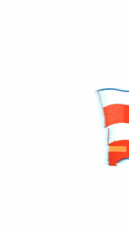
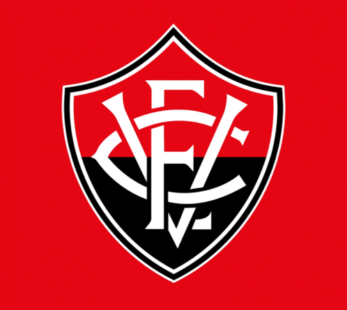
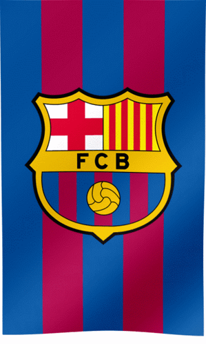
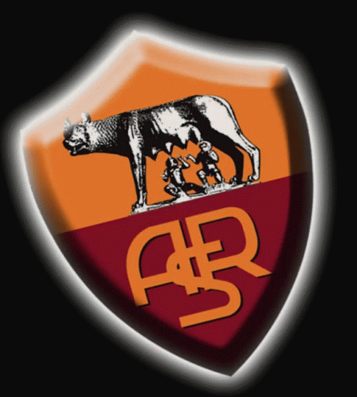
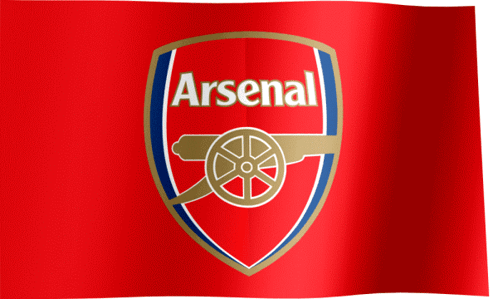

Esporte Clube Bahia

Fundado em 1 de janeiro de 1931, o Esporte Clube Bahia é um dos clubes mais tradicionais, queridos e vitoriosos do futebol brasileiro. Conhecido carinhosamente como o Esquadrão de Aço, o clube marcou seu nome na história ao conquistar o primeiro Campeonato Brasileiro unificado em 1959, batendo o poderoso Santos de Pelé na final, e repetindo o feito de forma inesquecível em 1988, comandado por nomes como Bobô e o técnico Evaristo de Macedo. O Bahia manda seus jogos na moderna Arena Fonte Nova, palco onde a sua imensa e apaixonada torcida — a Nação Tricolor — empurra o time com um caldeirão de cores azul, vermelha e branca. Além de sua força nacional, o clube é tetracampeão da Copa do Nordeste e soma dezenas de títulos estaduais, mantendo-se sempre como um dos maiores embaixadores da cultura e do esporte nordestino.
Esporte Clube Vitória

O Esporte Clube Vitória, fundado em 13 de maio de 1899, nasceu como o primeiro clube do Norte-Nordeste a ser fundado exclusivamente por brasileiros. Conhecido como o Leão da Barra e ostentando as cores vermelho e preto, o Vitória construiu uma reputação histórica invejável: ser um dos maiores e mais eficientes celeiros de revelação de talentos do futebol mundial. De suas divisões de base saíram craques consagrados como Bebeto, Dida, Hulk, David Luiz e Marcelo Moreno. O clube manda seus jogos no imponente Estádio Manoel Barradas (o Barradão), um reduto rubro-negro famoso pela pressão que exerce sobre os adversários. Dono de conquistas expressivas no cenário regional e vice-campeão brasileiro de 1993, o Vitória carrega uma das torcidas mais vibrantes e fiéis do país.
Futbol Club Barcelona

Fundado em 29 de novembro de 1899 por Hans Gamper, o FC Barcelona é muito mais do que uma instituição esportiva; é um símbolo cultural e político da Catalunha, eternizado pelo lema "Més que un club" (Mais que um clube). Os blaugranas revolucionaram a história do esporte mundial através da implantação de seu estilo técnico refinado, baseado na posse de bola e na famosa escola de base de La Masia. O clube coleciona dezenas de títulos da La Liga e múltiplas taças da UEFA Champions League, tendo vivido eras douradas inesquecíveis sob o comando de ícones como Johan Cruyff, Pep Guardiola e Lionel Messi. Mandando suas partidas no grandioso Camp Nou, o Barcelona atrai milhões de torcedores ao redor do planeta graças ao seu futebol ofensivo, artístico e de toque de bola envolvente.
Associazione Sportiva Roma

A Associazione Sportiva Roma foi fundada em 22 de julho de 1927 após a fusão de três clubes da capital italiana, com o objetivo de dar a Roma uma força unificada para enfrentar os gigantes do norte do país. Conhecida pelas cores amarelo-ouro (giallo) e vermelho-púrpura (rossoso), a Roma tem a grandiosidade e a paixão da Cidade Eterna impressas em sua identidade. O clube conquistou três títulos do Campeonato Italiano (Scudetto) e manda seus jogos no histórico Estádio Olímpico, dividindo a cidade com uma das rivalidades mais intensas do mundo, o Derby della Capitale contra a Lazio. A Lupa, símbolo da lenda de Rômulo e Remo que estampa o escudo do clube, é guiada pela devoção eterna de sua fanática torcida organizada, concentrada na Curva Sud, tendo tido em Francesco Totti e Daniele De Rossi os maiores símbolos de amor à camisa de sua história.
Arsenal Football Club

Fundado em 1886 por trabalhadores de uma fábrica de munições no sudeste de Londres (mudando-se posteriormente para o norte da cidade), o Arsenal Football Club é um dos clubes mais bem-sucedidos e tradicionais do futebol inglês. Conhecido pelo apelido de Gunners (Os Artilheiros) e ostentando as clássicas camisas vermelhas com mangas brancas, o clube é sinônimo de elegância histórica, disciplina tática e futebol vistoso. Sob a batuta de técnicos lendários como Herbert Chapman e, mais recentemente, o francês Arsène Weng.er, o Arsenal conquistou diversos títulos da Premier League e da Copa da Inglaterra (FA Cup). Sua maior glória moderna aconteceu na temporada 2003–2004, quando a equipe ficou conhecida como os Invincibles, conquistando o campeonato inglês sem sofrer nenhuma derrota ao longo de 38 rodadas — um feito raro e eternizado na história do futebol mundial